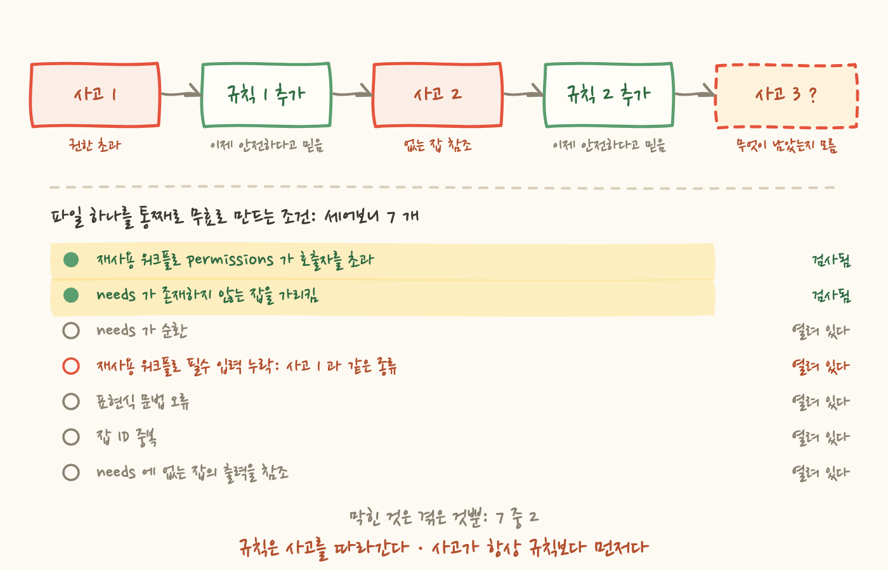
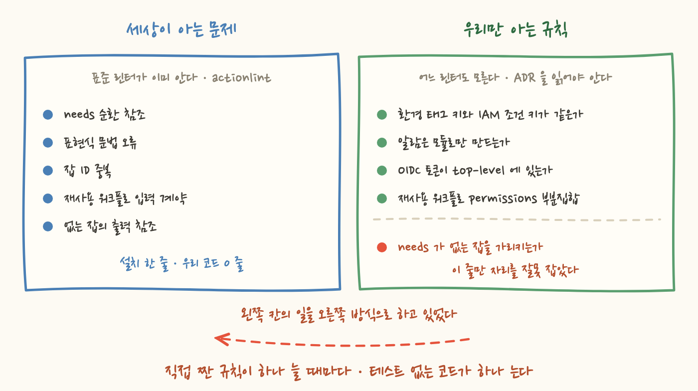

어제 워크플로 파일이 통째로 무효가 되는 사고를 냈어요. 잡이 하나도 안 태어나고, 로그도 없고, 인프라 반영 경로가 통째로 사라진 그 사고요. 그래서 그날 같은 결함을 파일만 읽고 잡아내는 검사기를 하나 써서 PR 체크에 매달았습니다. 다시는 안 겪겠다는 마음이었죠.
그리고 오늘, 같은 증상이 다시 났어요. 화면에 뜬 문장까지 똑같았습니다. 잡 0 개, This run likely failed because of a workflow file issue.
그 사이에 PR 은 초록불이었고, 어제 만든 그 검사기도 정상적으로 통과했습니다. 고장 난 게 아니었어요. 검사기는 자기가 보라고 시킨 것만 정확히 보고 통과시킨 겁니다. 이 글은 그래서 "가드를 어떻게 만드느냐"가 아니라 "가드의 사각지대를 어떻게 설계하느냐"에 대한 이야기예요.
먼저 첫 사고를 한 문단으로 요약할게요. 이 저장소의 apply 파이프라인은 환경별 절차를 _apply-env.yml 이라는 재사용 워크플로 하나로 빼두고, 호출부가 uses: 한 줄로 부릅니다. 그런데 재사용 워크플로가 선언한 permissions 는 호출 잡이 준 것의 부분집합이어야 하고, 초과하면 GitHub 은 그 잡 하나를 실패시키는 게 아니라 워크플로 파일 전체를 무효로 처리해요. 호출부 두 곳 중 한 곳에 issues: write 를 빠뜨린 탓에, 아무 잘못 없는 dispatch 잡까지 같이 죽었습니다. (자세한 건 8편에)
수리하면서 검사기를 만들었어요. 이름이 check-workflow-permissions.py 였습니다. 이름이 곧 범위였죠. 하는 일은 이게 전부예요.
여기서 오늘의 핵심을 미리 하나 짚고 갈게요. 이 검사기는 워크플로 파일을 전부 열고, 전부 파싱하고, 모든 잡을 순회합니다. 그러니까 필요한 정보는 이미 손에 다 쥐고 있었어요. 그런데 needs 라는 키는 읽지도 않았습니다. 몰라서가 아니라, 그날 난 사고가 권한 사고였기 때문이에요.
오늘 한 작업은 이거였어요. 스택을 하나 추가할 때마다 워크플로 다섯 곳에 이름을 등록해야 했는데, 빠뜨려도 아무 신호가 없었습니다. plan 매트릭스에 등록을 빠뜨리면 validate·tflint·plan 이 아예 안 도는데 PR 은 초록불이에요. 그래서 스택 목록을 워크플로에서 없애고 디렉터리 스캔으로 바꿨습니다. backend 가 있는 디렉터리를 찾아 매트릭스를 만드는 스크립트를 하나 두고, 디렉터리를 만드는 것만으로 등록되게요.
이 변경은 워크플로 세 파일에 각각 두 조각씩 들어가야 했어요. 하나는 스캔을 돌리는 discover 잡을 새로 정의하는 조각, 다른 하나는 하드코딩된 매트릭스를 needs.discover 의 출력으로 갈아끼우는 조각입니다. 세 파일 곱하기 두 조각, 여섯 군데죠.
다섯 군데는 들어갔습니다. 한 군데가 안 들어갔어요.
세 파일 중 두 파일에는 정확히 들어가고, 한 파일에서만 절반만 적용됐습니다. 그것도 하필 나중에 오는 절반, 그러니까 참조하는 쪽만 들어갔어요. 결과는 이렇게 생긴 파일입니다.
커밋 메시지에는 세 파일 모두 "discover 잡 +" 라고 또박또박 적혀 있었어요. 커밋 메시지는 의도를 적은 것이지 결과를 적은 게 아닙니다. 저는 그걸 스스로 검산한 셈 치고 넘어갔고요.
여기가 중요한 대목이에요. 이 파일은 세 겹의 검사를 그냥 통과했습니다.
첫째, YAML 파서는 통과합니다. needs: discover 는 완벽하게 유효한 YAML 이에요. 문자열 하나짜리 값이니까요. 파서 입장에서 이 파일은 흠잡을 데가 없습니다. 문법은 맞고 의미가 틀린 상태고, 파서는 의미를 모릅니다.
둘째, 어제 만든 검사기도 통과합니다. 앞에서 말했듯 needs 를 안 읽으니까요. 권한 관계는 이 커밋에서 아무것도 안 바뀌었고, 검사기는 정직하게 "권한 검사 통과"를 찍었습니다.
셋째, GitHub 도 PR 에서는 검증하지 않습니다. 8편에서 이미 짚은 그 구멍이에요. GitHub 은 워크플로 파일을 그 파일로 run 을 만들려고 할 때만 파싱하고 잡 그래프를 만듭니다. Terraform Apply 의 트리거는 push 와 workflow_dispatch 뿐이라 pull_request 이벤트에서는 단 한 번도 실행되지 않아요. 그러니 검증 횟수도 0 회입니다.
그래서 머지 뒤 첫 push 에서야 드러났습니다. 없는 잡을 needs 로 가리키는 건 잡 그래프를 만들 수 없다는 뜻이고, 잡 그래프를 못 만들면 그 파일의 잡이 전부 태어나지 못해요. 원인은 완전히 다른데 피해 범위와 화면에 뜨는 문장은 어제와 글자 하나까지 똑같았습니다.
수리는 두 줄기였어요. discover 잡을 제자리에 넣고, 검사기에 needs 참조 검사를 붙였습니다. 검사기 이름도 check-workflow-permissions.py 에서 check-workflows.py 로 바꿨어요. 권한 부분집합과 needs 참조는 둘 다 "파일 전체를 무효로 만드는 조건"이라는 같은 가족이니까, 한 검사기에 두는 게 맞다고 판단했습니다.
커밋하기 직전까지는 기분이 좋았어요. 이제 안전하니까요. 그런데 커밋 메시지에 "파일 전체를 무효로 만드는 조건"이라고 쓰는 순간 손이 멈췄습니다. 그 조건이 몇 개인지 세어본 적이 없었거든요.
세어봤더니 최소 일곱 개였습니다.
일곱 중 둘. 그리고 그 둘은 정확히 제가 겪은 사고 두 개였어요. 하나도 더 있지 않고, 하나도 덜하지 않고, 딱 겪은 만큼만 막혀 있었습니다.
제일 뼈아픈 건 네 번째 줄이에요. 재사용 워크플로가 요구하는 필수 입력을 호출부가 안 주는 것인데, 이건 첫 사고와 완전히 같은 가족입니다. 둘 다 "호출부와 피호출부 사이의 계약 위반"이고, 둘 다 파일을 정적으로 읽으면 5초 만에 보이고, 둘 다 파일 전체를 무효로 만들어요. 심지어 제 검사기는 그 계약을 검사하려고 이미 두 파일을 나란히 열어둔 상태였습니다. permissions 딕셔너리를 비교하는 그 자리에서 inputs 딕셔너리를 비교하는 데 필요한 건 열 줄이었어요.
안 했습니다. 그 사고를 안 겪었으니까요. 첫 사고를 겪고도 바로 옆자리를 안 본 겁니다.
여기서 나오는 결론이 이 글의 본론이에요. N 번째 사고마다 규칙 N 개를 붙이는 방식은 N+1 번째 사고를 절대 막지 못합니다. 규칙은 사고를 따라가고, 사고는 항상 규칙보다 앞서 있어요. 그리고 이 방식의 진짜 문제는 못 막는다는 게 아니라, 막을 때마다 안전해졌다는 느낌이 정확히 한 칸씩 늘어난다는 겁니다.

여기서 자연스러운 반응은 "그럼 나머지 다섯 개도 마저 짜자"예요. 저도 잠깐 그랬습니다. 그런데 그건 여전히 같은 방식으로 조금 더 부지런한 것일 뿐이에요. 순환 참조 검사를 짜려면 그래프 탐색을 붙여야 하고, 표현식 문법 검사를 짜려면 파서를 써야 합니다. 그러다 보면 어느새 우리 저장소에 워크플로 린터를 하나 새로 만들고 있게 돼요.
제가 밟은 순서가 틀렸다는 걸 이 지점에서 알았습니다. 옳은 순서는 이거였어요.
저는 1번을 건너뛰고 4번부터 시작했습니다. 사고 하나를 겪고 그 사고의 이름으로 검사기 파일을 하나 만들었으니까요. 파일 이름이 check-workflow-permissions.py 였다는 게 그 증거예요. 클래스가 아니라 증상 하나의 이름이었습니다.
2번과 3번을 제대로 했으면 어떻게 됐을까요. 이 클래스는 세상에서 아주 잘 알려진 문제고, actionlint 라는 공개 린터가 있습니다. 문서에 적힌 검사 목록을 위의 일곱 개와 대조해봤어요.
일곱 중 여섯입니다. 그리고 그 여섯 안에 제 두 번째 사고가 통째로 들어 있어요. 설치 한 줄이면 닫혔을 구멍이었습니다. 저는 그걸 직접 짜느라 코드를 열 줄 더 썼고, 그러고도 나머지 다섯 개는 그대로 열어뒀고요.
더 흥미로운 건 마지막 줄이에요. 일곱 개 중 표준 린터의 문서에 없는 건 정확히 하나, 첫 사고의 그 규칙입니다. 그러니까 제 자체 검사기가 정당하게 남길 것은 제일 처음 짠 그 부분뿐이고, 오늘 덧붙인 부분은 남의 도구가 이미 아는 것이었어요. 우연히 절반은 맞은 셈인데, 맞은 이유가 설계가 아니라 순서였습니다.
그럼 자체 검사기는 언제 정당할까요. 세상 어느 린터도 알 수 없는, 우리 저장소에만 있는 규칙일 때예요. 이 저장소에는 그런 게 실제로 있습니다.
default_tags 키가 같아야 한다. 다르면 그 Deny 는 에러 없이 조용히 영원히 안 걸린다. (10편)id-token: write 를 파일 최상단에 두면 서드파티 코드를 돌리는 잡까지 토큰을 받는다.
그림 2 의 마지막 줄이 이 장의 주제예요. 자체 검사기를 하나 더 짤 때마다 테스트 없는 코드가 한 덩어리 늘어납니다. "테스트 없는"이 과장이 아니라, 이 저장소를 전부 훑어보고 확인한 사실이에요.
자체 검사기가 넷인데 그중 어느 것에도 테스트가 없습니다. 그럼 이 검사기들이 실제로 잡는지는 어떻게 확인했을까요. 커밋 메시지에 문장으로 남아 있어요. "일부러 없는 잡을 참조하게 만들어 잡히는 것을 확인했다."
이건 좋은 습관이에요. 8편에서도 검사기를 만들면 반드시 일부러 고장 내보라고 썼고, 실제로 그렇게 했습니다. 그런데 그 확인은 1회성이고, 사람 손이고, 흔적이 문장 하나뿐이에요. 다음 사람이 이 검사기를 리팩터링하다가 안쪽 루프 하나를 망가뜨려도, 예를 들어 jobs 를 순회하는 대신 빈 딕셔너리를 순회하게 되어도 검사기는 에러 없이 종료 코드 0 을 뱉습니다. 화면에는 "워크플로 검사 통과"가 찍히고요.
이게 이 시리즈에서 계속 반복된 그 실패 모드예요. 가드가 조용히 죽는 것입니다. 태그 키를 바꿨더니 IAM Deny 가 조용히 죽었고(10편), 알람 파이프라인이 432일 끊겨 있었는데 아무 신호가 없었고(12편), 이제는 그 사고들을 막으라고 만든 검사기가 조용히 죽을 차례입니다. 한 층 위로 올라왔을 뿐 구조가 똑같아요.
이미 만들어놨거든요. 일부러 깨뜨린 그 입력을 버리지 말고 파일로 남기면 그게 테스트입니다.
그런데 지금 검사기로는 이게 안 됩니다. 이유가 재밌어요.
검사 대상 디렉터리가 코드에 상수로 적혀 있어서 픽스처 디렉터리를 가리킬 수가 없어요. 다른 검사기들도 똑같이 저장소 루트를 상수로 두고 있습니다. 테스트 가능성이 코드에서 빠진 게 아니라 설계에서 빠진 거예요. 경로를 인자로 받는 한 줄짜리 변경이 "이 검사기를 테스트할 수 있느냐"를 가릅니다.
이번 일에서 제가 바꾼 건 검사기가 아니라 질문이에요.
검사기를 만들 때 저는 늘 "이걸로 그 사고를 막을 수 있나?"를 물었습니다. 답은 항상 "예"였어요. 방금 겪은 사고를 보고 만든 거니까 당연히 그 사고는 막습니다. 그리고 이 질문은 한 번도 "아니오"가 나오지 않기 때문에 아무것도 걸러내지 못해요. 통과하는 게 보장된 시험이었던 겁니다.
바꾼 질문은 이거예요. "이 사고가 속한 클래스의 나머지는 무엇인가?"
이 질문은 답하기가 훨씬 불편합니다. 답하려면 겪지 않은 것들을 세어봐야 하고, 세어보면 대부분 내가 막은 건 하나고 열려 있는 게 여섯이라는 걸 알게 되거든요. 대신 세어보는 순간 두 가지가 따라옵니다. 그 클래스를 이미 아는 도구가 세상에 있는지 찾아보게 되고, 그 도구가 모르는 나머지가 무엇인지도 명확해져요. 그게 자체 검사기가 있어야 할 자리고요.
마지막으로, 하나를 겪고 하나를 막았을 때 진짜로 위험한 건 남은 여섯 개가 아니에요. 막았다는 믿음입니다. 여섯 개가 열려 있는 건 원래도 그랬어요. 달라진 건 이제 우리가 그 위에 "가드 있음"이라고 써 붙였다는 거고, 그 다음부터는 아무도 세어보지 않는다는 거죠. 가드의 가장 위험한 부작용은 안심입니다.